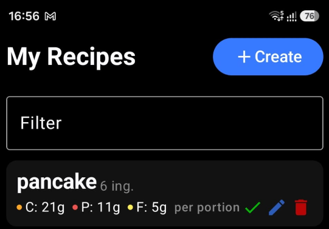

There are three ways to add a meal in IronSet:
On the Nutrition Tracker screen, use an interactive approach with sliders and buttons to adjust nutritional values. This provides a more intuitive and user-friendly experience when logging meals.
Navigate to the Recipe screen, select a pre-defined meal, and tap the Log Meal button to save it. The application will automatically fill in the nutritional information for the selected meal.

Check or uncheck the "Single Serving" option to indicate whether the meal is a single serving or if you want to provide the weight in grams.
When preparing meals, you can perform multiple scans to add all independent components. For example, if you are having a portion of mashed potatoes, grilled chicken, and salad, you can scan each component separately and log them as individual items, providing the weight for each component.
Position the meal or meal image in front of the camera and tap the Scan button.
If you want the AI to identify the weight and estimate the total nutritional content, uncheck "Single Serving." The AI will then do its best to estimate the meal weight and provide a nutritional breakdown.
Position the meal or meal image in front of the camera and tap the Scan button.
Next step: Review the scanned information and tap Log Meal to save it.